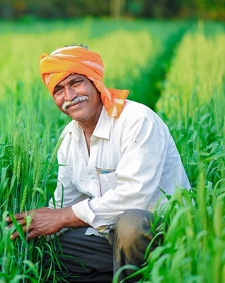

<div class="about-section paddingTB60 gray-bg">
    <div class="container">
        <div class="row">
            <div class="col-md-7 col-sm-6 w3-animate-right">
                <div class="about-title clearfix">
                    <h1>{{'about.about' | translate}} <span>{{'about.us' | translate}}</span></h1>
                    <h3>{{'about.annapurnas' | translate}} </h3>
                    <p class="about-paddingB">Agriculture is the backbone of the
                        Indian Economy"- said
                        Mahatma Gandhi six decades ago. Even today, the
                        situation is
                        still the same, with almost the entire economy being
                        sustained by agriculture, which is the mainstay of the
                        villages. It contributes 16% of the overall GDP and
                        accounts
                        for employment of approximately 52% of the Indian
                        population. Rapid growth in agriculture is essential not
                        only for self-reliance. Indian farmers are second to
                        none in
                        production and productivity despite of the fact that
                        millions are marginal and small farmers. They adopt
                        improved
                        agriculture technology as efficiently as farmers in
                        developed countries. It is felt that with provision of
                        timely and adequate inputs such as fertilizers, seeds,
                        pesticides and by making available affordable
                        agricultural
                        credit /crop insurance, Indian farmers are going to
                        ensure
                        food and nutritional security to the Nation. </p>
                    <p>Indian farmers face lot of problems when it comes to
                        buying
                        seeds and fertilizer from authorized channel at right
                        price.
                        Same applies to selling farm produce at right price so
                        that
                        farming becomes profitable occupation. Need of an hour
                        is to
                        build e-portal for farms wherein they can buy seeds and
                        fertilizers at the optimal price. This portal should
                        also
                        allow consumers to bid/ask for the farm produce thus
                        eradicating middle man and benefiting both farmers and
                        consumers.</p>
                    <div class="about-icons">
                        <ul>
                            <li><a href="https://www.facebook.com/"><i
                                        id="social-fb"
                                        class="fa fa-facebook-square fa-3x social"></i></a>
                            </li>
                            <li><a href="https://twitter.com/"><i id="social-tw"
                                        class="fa fa-twitter-square fa-3x social"></i></a>
                            </li>
                            <li> <a href="https://plus.google.com/"><i
                                        id="social-gp"
                                        class="fa fa-google-plus-square fa-3x social"></i></a>
                            </li>
                            <li> <a href="mailto:bootsnipp@gmail.com"><i
                                        id="social-em"
                                        class="fa fa-envelope-square fa-3x social"></i></a>
                            </li>
                        </ul>
                    </div>
                </div>
            </div>
            <div class="col-md-5 col-sm-6 w3-animate-left">
                <div class="about-img">
                    
                </div>
            </div>
        </div>
    </div>
</div>